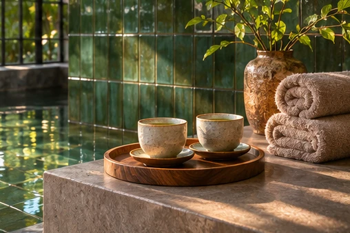

Um encontro com espaço para dois.
Planeje uma visita em dupla e veja quais janelas aparecem para atendimento no mesmo horário ou em sequência.

Planeje uma visita em dupla e veja quais janelas aparecem para atendimento no mesmo horário ou em sequência.